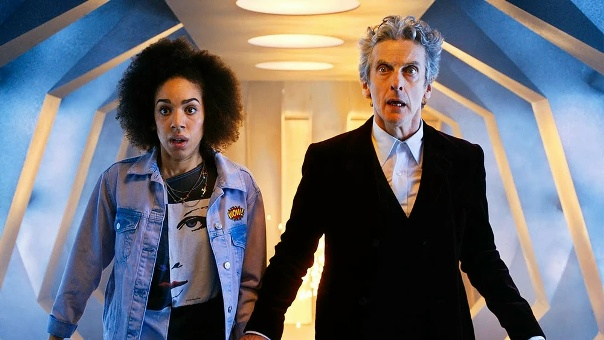

Эра Двенадцатого Доктора
<<< НАЗАД ||| Друг из будущего ||| ДАЛЬШЕ >>>
или
ДАЛЬШЕ >>> к спин-офф сериалу "Класс"

Friend from the Future приквел к 10 сезону 23 апреля 2016
Формат: 3-минутный эпизод
| Варианты озвучек: | * DVO PARUSSKI |
|---|---|
| Скачивание и просмотр: |
Небольшой тизер к 10 сезону «Доктора Кто» с участием Двенадцатого Доктора и его новой спутницы Билл Поттс, выпущенный 23 апреля 2016 года и впервые представивший Билл зрителям.
Позже эта сцена с участием далеков была частично вписана в сюжет 1 серии 10 сезона, «Пилот» (2017), где также выяснилось, что события происходят во время далеко-мовелланской войны, впервые показанной в серии «Судьба далеков» (1979)

